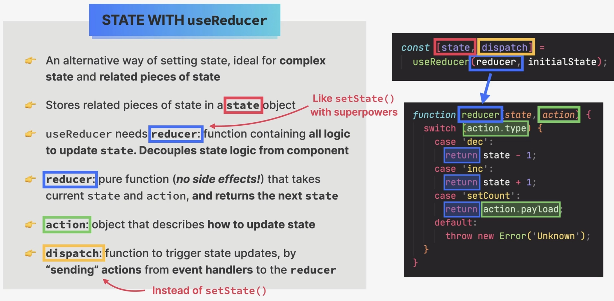
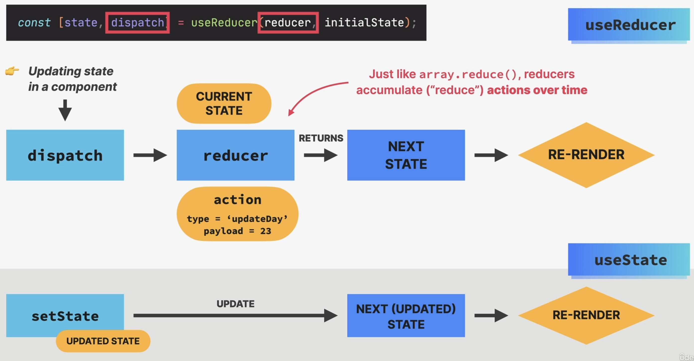
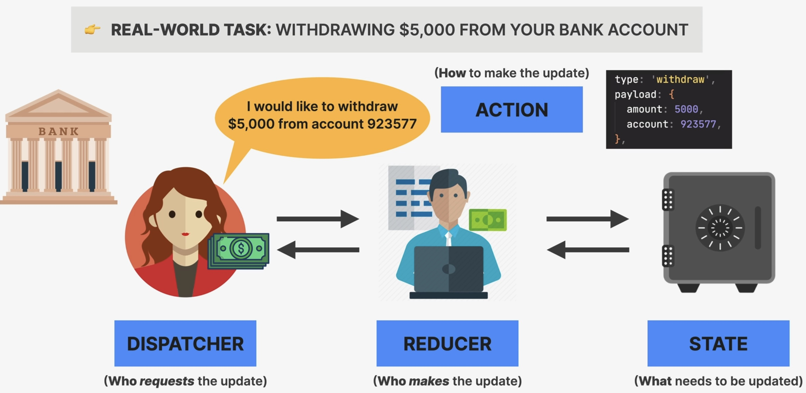

Managing State with useReducer
Why useReducer ?
State management with useState is not enough in certain situations:
When components have a lot of state variables and state updates, spread across many event handlers all over the component
When multiple state updates need to happen at the same time (as a reaction to the same event, like “starting a game”)
When updating one piece of state depends on one or multiple other pieces of state
State with useReducer
alternative way to setting state, ideal for complex state and related pieces of state
stores related pieces of state in a state object:
const [state, dispatch] = useReducer(reducer, initialState);
useReducerneeds areducerfunction containing all logic to updatestate. It decouples state logic from the component, making the component more readable.reducer: pure function (no side effects!) that takes currentstateandactionand returns the nextstateImportant
The
reducerfunction must not change the current state, but return a new state.action: object that describes how to update statedispatch: function to trigger state updates, by “sending actions” from event handlers to thereducer

Managing state with useReducer
How reducers update state

How reducers update state
Hint
The reducer is called like that, because same as the array.reduce() method,
which accumulates all values of an array into one value, the reducer()``function
"reduces" all actions (attributes inside the ``action object passed into the
dispatch() function) into one new state object.
behind the scenes, the
dispatchfunction has access to thereducerfunction, as it was passed in the initial assignment:const [state, dispatch] = useReducer(reducer, initialState);

A mental model for reducers
the dispatcher defines the state update request, defining how to update the state
the reducer is the one who knows how to technically update the state and performs the state update